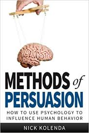
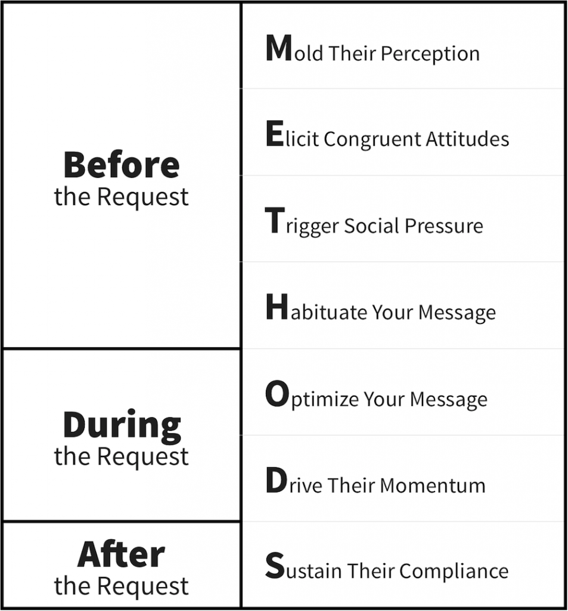
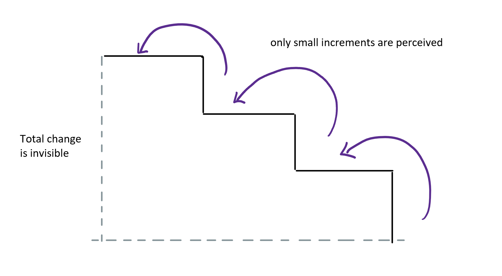
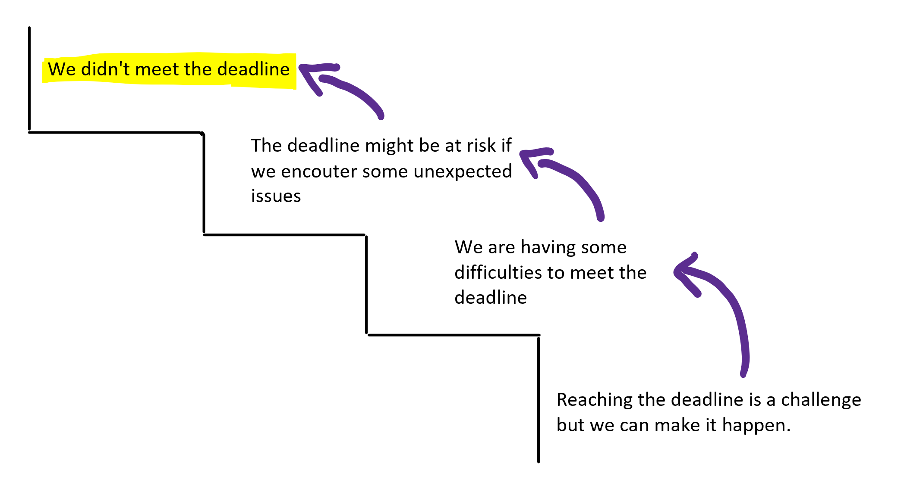
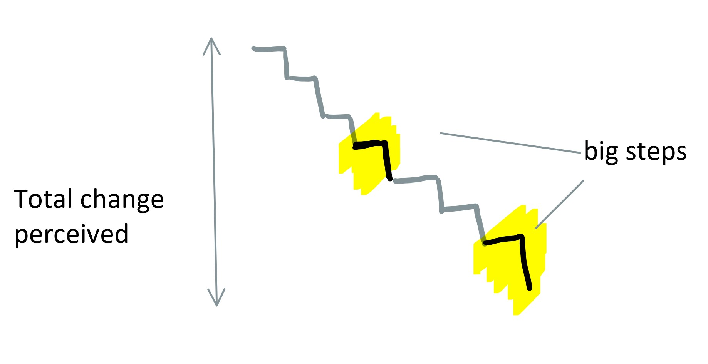

class: middle, center # Exercise --- class: left, center # Persuasion Technique: Priming > set cues to produce an expected outcome by tapping in concept associations. # e.g. Lucky Darf -> Luck -> 7 --- class: middle # Why Persuasion? --- class: center # Methods of Persuasion by Nick Kolenda  --- class: center, middle  --- class: center # Change blindness > We cannot perceive well the total result of incremental changes  --- class: center # Persuasion Technique: Systematic desensitization > set of incremental steps that you can eventually integrate your entire message without their awareness.  **usage**: giving bad news, ask for a raise, ask for a favour, say no, etc. <!-- --- class: center # Reversed: Big Step > show more changes at once when asked to increase the perception of total results.  **usage**: showing results to clients, getting a promotion, save your marriage, etc. --> --- class: left # Exercise 1. Think about something you had to communicate which wasn't easy (e.g. bad news, asking for something, new boyfriend, etc). 2. Draw a staircase with at least 3 steps 3. Think about how you can desensitize the receive with gradual --- class: left # To wrap up * There are many persuasion techniques that together can get you to the expected outcome. * Learn basic technique to help you communicate difficult messages less abruptly.